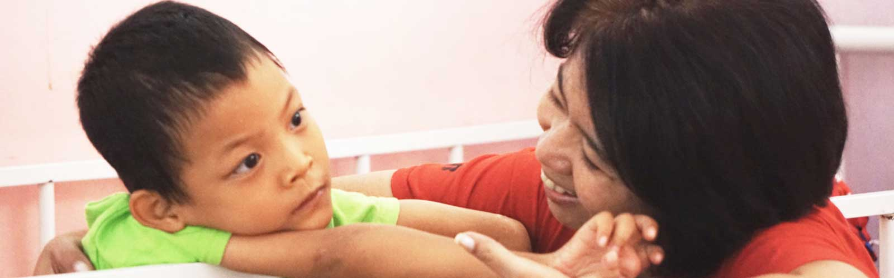

Heesu Foundation provides an easy and practical way if you wish to contribute through Donation.
Kindly transfer your fund that will be utilized for the children's needs to below account:
Bank Mandiri Branch Office Sudirman, Jakarta
Account No. : 1020006198110
Account Holder : Yayasan Heesu
To help us maintain our records, as part of the administration process, kindly send us the Proof of Bank Transfer after your donation via:
Email : admin@yudanifoundation.org
SMS ONLY : 0813 1889 9232
During 08.00 - 17.00